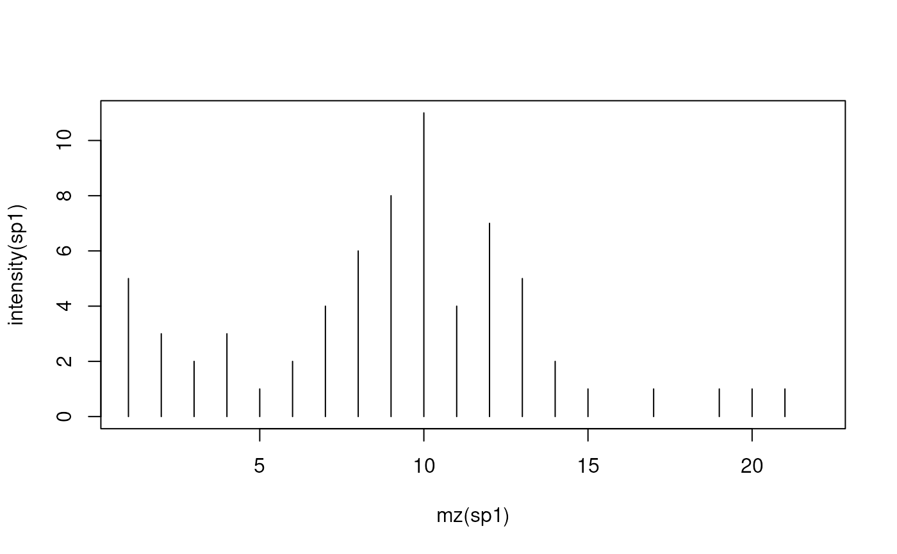

Peak Detection for 'MSnExp' or 'Spectrum' instances
pickPeaks-method.RdThis method performs a peak picking on individual spectra
(Spectrum instances) or whole experiments (MSnExp instances) to
create centroided spectra.
For noisy spectra there are currently two different noise estimators
available, the Median Absolute Deviation (method = "MAD") and
Friedman's Super Smoother (method = "SuperSmoother"),
as implemented in the MALDIquant::detectPeaks and
MALDIquant::estimateNoise functions respectively.
The method supports also to optionally refine the m/z value of the identified centroids by considering data points that belong (most likely) to the same mass peak. The m/z value is calculated as an intensity weighted average of the m/z values within the peak region. How the peak region is defined depends on the method chosen:
refineMz = "kNeighbors": m/z values (and their respective
intensities) of the2 * k closest signals to the centroid are
used in the intensity weighted average calculation. The number of
neighboring signals can be defined with the argument k.
refineMz = "descendPeak": the peak region is defined by
descending from the identified centroid/peak on both sides until the
measured signal increases again. Within this defined region all
measurements with an intensity of at least signalPercentage of
the centroid's intensity are used to calculate the refined m/z. By
default the descend is stopped when the first signal that is equal or
larger than the last observed one is encountered. Setting
stopAtTwo = TRUE, two consecutively increasing signals are
required.
By default (refineMz = "none", simply the m/z of the largest
signal (the identified centroid) is reported. See below for examples.
Methods
signature(x = "MSnExp", halfWindowSize = "integer", method = "character", SNR = "numeric", verbose = "logical", refineMz = "character", ...)Performs the peak picking for all spectra in an
MSnExpinstance.methodcould be"MAD"or"SuperSmoother".halfWindowSizecontrols the window size of the peak picking algorithm. The resulting window size is2 * halfWindowSize + 1. The size should be nearly (or slightly larger) the FWHM (full width at half maximum). A local maximum is considered as peak if its intensity isSNRtimes larger than the estimated noise.refineMzallows to choose a method for an optional centroid m/z refinement (see description for more details). Choises are"none"(default, no m/z refinement),"kNeighbors"and"descendPeak". The arguments...are passed to the noise estimator or m/z refinement functions. For the noise estimator functions, currenlty only themethod = "SuperSmoother"accepts additional arguments, e.g.span. Please seesupsmufor details.refineMethod = "kNeighbors"supports additional argumentkandrefineMethod = "descendPeak"argumentssignalPercentageandstopAtTwo. See description above for more details.This method displays a progress bar if
verbose = TRUE. Returns anMSnExpinstance with centroided spectra.signature(x = "Spectrum", method = "character", halfWindowSize = "integer", ...)Performs the peak picking for the spectrum (
Spectruminstance). This method is the same as above but returns a centroidedSpectruminstead of anMSnExpobject. It has noverboseargument. Please read the details for the aboveMSnExpmethod.
See also
clean, removePeaks smooth,
estimateNoise and trimMz for other spectra
processing methods.
References
S. Gibb and K. Strimmer. 2012. MALDIquant: a versatile R package for the analysis of mass spectrometry data. Bioinformatics 28: 2270-2271. http://strimmerlab.org/software/maldiquant/
Examples
sp1 <- new("Spectrum1",
intensity = c(1:6, 5:1),
mz = 1:11,
centroided = FALSE)
sp2 <- pickPeaks(sp1)
#> Error: unable to find an inherited method for function ‘pickPeaks’ for signature ‘object = "Spectrum1"’
intensity(sp2)
#> Error in h(simpleError(msg, call)): error in evaluating the argument 'object' in selecting a method for function 'intensity': object 'sp2' not found
data(itraqdata)
itraqdata2 <- pickPeaks(itraqdata)
#> Error: unable to find an inherited method for function ‘pickPeaks’ for signature ‘object = "MSnExp"’
processingData(itraqdata2)
#> Error in h(simpleError(msg, call)): error in evaluating the argument 'object' in selecting a method for function 'processingData': object 'itraqdata2' not found
## Examples for refineMz:
ints <- c(5, 3, 2, 3, 1, 2, 4, 6, 8, 11, 4, 7, 5, 2, 1, 0, 1, 0, 1, 1, 1, 0)
mzs <- 1:length(ints)
sp1 <- new("Spectrum1", intensity = ints, mz = mzs, centroided = FALSE)
plot(mz(sp1), intensity(sp1), type = "h")

## Without m/z refinement:
sp2 <- pickPeaks(sp1)
#> Error: unable to find an inherited method for function ‘pickPeaks’ for signature ‘object = "Spectrum1"’
points(mz(sp2), intensity(sp2), col = "darkgrey")
#> Error in h(simpleError(msg, call)): error in evaluating the argument 'object' in selecting a method for function 'mz': object 'sp2' not found
## Using k = 1, closest signals
sp3 <- pickPeaks(sp1, refineMz = "kNeighbors", k = 1)
#> Error: unable to find an inherited method for function ‘pickPeaks’ for signature ‘object = "Spectrum1"’
points(mz(sp3), intensity(sp3), col = "green", type = "h")
#> Error in h(simpleError(msg, call)): error in evaluating the argument 'object' in selecting a method for function 'mz': object 'sp3' not found
## Using descendPeak requiring at least 50% or the centroid's intensity
sp4 <- pickPeaks(sp1, refineMz = "descendPeak", signalPercentage = 50)
#> Error: unable to find an inherited method for function ‘pickPeaks’ for signature ‘object = "Spectrum1"’
points(mz(sp4), intensity(sp4), col = "red", type = "h")
#> Error in h(simpleError(msg, call)): error in evaluating the argument 'object' in selecting a method for function 'mz': object 'sp4' not found